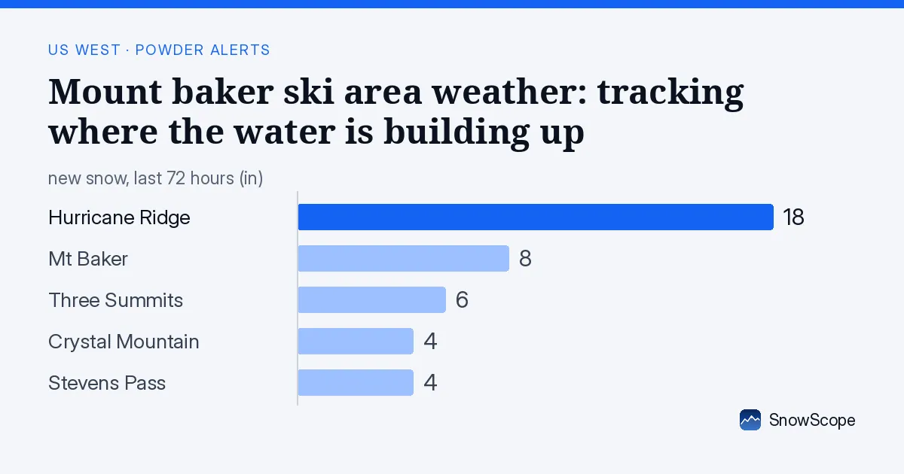
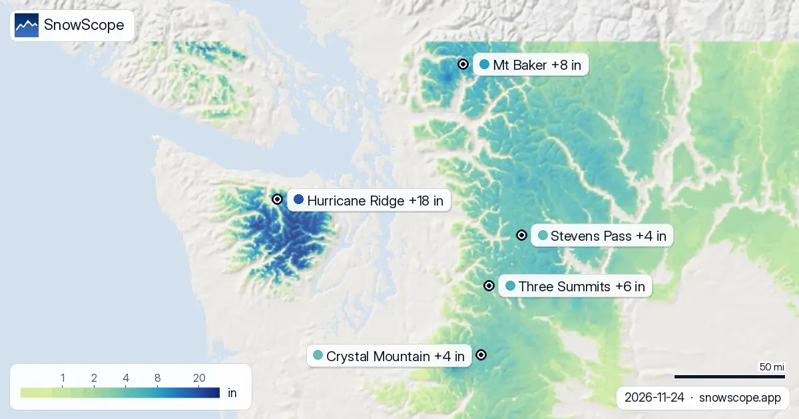

Mount baker ski area weather: tracking where the water is building up
Mount baker ski area weather – Where is the snow water building up in the Cascades right now? Mt Baker holds 28 cm (11 in) on its upper slopes, matching the average for late November at that elevation. After a quiet weekend, the region is waking up to fresh snow, with more coming later this week.
See the live snow forecast for Mt Baker in the SnowScope appSnow depth, powder alerts and the 3D map, free.
Mt Baker: on track for the season
Mt Baker's upper slopes sit at 28 cm today, which is exactly what you would expect to see at this height on this date. The snow cover is thin by late-season standards, but for November it is typical. What matters for water storage is not the depth alone but where it falls and at what speed. The past 72 hours brought 20 cm across the region, but Mt Baker received only 12 cm in the last 24 hours.
The nearest measurement station, Wells Creek, recorded no fresh snow on 22 November, suggesting the heaviest fall landed higher on the mountain. SnowScope shows snow on the ground at Mt Baker as of 19 November, so the recent powder is building a fresh layer on top.
| Resort | Snow depth | New snow, 72 h | Coming, next days | Top |
|---|---|---|---|---|
| Hurricane Ridge | 20 in (52 cm) | 18 in (45 cm) | 12 in (31 cm) | 5,446 ft (1,660 m) |
| Mt Baker | 11 in (28 cm) | 8 in (20 cm) | 22 in (56 cm) | 5,105 ft (1,556 m) |
| Three Summits | 2 in (6 cm) | 6 in (14 cm) | 2 in (6 cm) | 3,881 ft (1,183 m) |
| Crystal Mountain | 15 in (38 cm) | 4 in (11 cm) | 26 in (66 cm) | 6,798 ft (2,072 m) |
| Stevens Pass | 11 in (29 cm) | 4 in (11 cm) | 15 in (37 cm) | 5,666 ft (1,727 m) |

Where fresh snow fell hardest
Hurricane Ridge captured the most water in the past three days. Storm activity near Hurricane Ridge dropped 41 cm (16 in) in 72 hours, just 3 km from the resort. Mt Baker caught a secondary band that laid down 36 cm (14 in) in the same window, though the heaviest falls missed the resort itself by 14 km.
Ground measurements tell the story of where the water accumulated. Mt. Tebo station at 1,030 m recorded 23 cm (9 in) in one day on 22 November, while Hemlock Butte at 1,768 m (5,807 ft) logged 13 cm (5 in). Swift Creek at 1,353 m (4,436 ft) also measured 13 cm (5 in). These point readings show that snow fell across a range of heights, not concentrated at one band.
The water is arriving Thursday
Mt Baker's forecast shows 56 cm (22 in) of new snow over the next three days, but the water will not arrive evenly. Wednesday and Thursday morning stay quiet: 9 cm and 34 cm respectively, with Thursday doing most of the work. By Friday the storms ease, adding just 13 cm (5 in).
The freezing level on Wednesday rises to 1,500–1,820 m (4,920–5,970 ft), which means lower slopes may see rain mixed with snow or no snow at all. By Thursday that level drops to 1,360–1,860 m (4,460–6,100 ft), tightening the band where snow turns to rain. Upper slopes at 1,556 m (5,105 ft) will stay cold enough to hold all precipitation as snow.
Upper slopes win the race
The top of Mt Baker will capture the most water this week. At 1,556 m, the forecast shows 66 cm (26 in) of new snow over the next seven days. The mid-mountain at 1,331 m will receive 55 cm (22 in), and the base at 1,106 m only 26 cm (10 in). This is typical for a maritime snow climate: cold, moist air rolls inland from the Pacific and dumps its load on the highest ground first.
The difference in depth shows why elevation matters for water storage. Snow at the base may compact or melt, but snow at the top stays on the mountain longer, feeding streams later in winter and spring.
How this week compares
Mt Baker is running 17 cm (7 in) below the November average at this height, but that gap will close if the Thursday forecast holds. Hurricane Ridge, by contrast, is running exactly at average with 32 cm (13 in) of water equivalent at 1,572 m (5,157 ft). The region as a whole has 185 of 193 resorts holding snow on 24 November, compared to 186 two days earlier.
Early season snow is never stable. Thin snow on new ground, steep aspect melt, and mixed rain at lower elevations all carry risk. Check the official avalanche bulletin before skiing off-piste, and watch the freezing level closely.
What to watch next
By 27 November, SnowScope forecasts snow-covered area will drop to 767,520 km² as the storms move east and lower elevations lose snow to melt. The water will be there—it will just be moving downslope rather than storing on the mountain. The key question then becomes: will the base layers bond to the new snow falling Thursday, or will weak layers form? Ground measurements, storm timing, and slope aspect all feed that answer, and no single number tells the whole story.
Tips for skiers
- Mt Baker's upper slopes at 1,556 m will be the safest bet for preserved powder Thursday. Lower slopes risk rain mixing with snow if the freezing level climbs on Wednesday.
- Fresh snow is arriving from Wednesday evening onward, but expect the heaviest accumulation Thursday 26 November. Plan your timing around that window.
- Check the official avalanche bulletin before touring off-piste, especially on steep north-facing slopes where new snow sits on older, weaker layers.
- Water is building fastest at the highest elevations. If you have the option, ride or tour above 1,500 m (4,920 ft) to find the most consolidated precipitation.
- The thin early-season base means rocks and old ground may be close beneath. Stay alert for obstacles under the fresh cover.
About these numbers
Resort snow depths are the deepest snow on the resort's upper slopes on the date shown; they are estimates for an area, not a measurement at one point. Forecasts can change. Always read the official avalanche bulletin before going off-piste.
Official avalanche bulletins: avalanche.org
Cite this report
For research, teaching or the press: the numbers and charts are free to reuse under CC BY 4.0 with this citation.
SnowScope (2026), Mount baker ski area weather: tracking where the water is building up, https://snowscope.app/blog/en/2026/11/us-west-mt-baker-fresh-snow-powder-alert-24-november-2026.html, accessed 2026-11-24
SnowScope (Atlas Labs). (2026, November 24). Mount baker ski area weather: tracking where the water is building up. SnowScope snow reports. https://snowscope.app/blog/en/2026/11/us-west-mt-baker-fresh-snow-powder-alert-24-november-2026.html
BibTeX
@misc{snowscope2026uswestmtbakerfreshsnowpo,
author = {{SnowScope (Atlas Labs)}},
title = {Mount baker ski area weather: tracking where the water is building up},
year = {2026},
month = nov,
howpublished = {\url{https://snowscope.app/blog/en/2026/11/us-west-mt-baker-fresh-snow-powder-alert-24-november-2026.html}},
note = {Published 2026-11-24 14:08 UTC; accessed 2026-11-24}
}· CC BY 4.0 · Methods, data and tools →
Mt Baker: snow and temperature by height, this winter vs last (tools) →
Follow Mt Baker
Free: a message when fresh snow is coming, and the forecast every morning.
More snow reports

Mt Baker: 8 in (21 cm) at the summit versus less than 1 in (2 cm) at the base. November forecast shows how this height gap will shift.

The forecast shows up to 199 cm across the US West in the next two weeks, with the heaviest snow arriving in week one. Data from 21 November 2026.

Mt Baker, Washington: about 133 in (337 cm) at the usual peak at mid-mountain in 46 past winters, a world snowfall record, no lodging on the hill, and what that means.